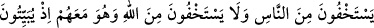
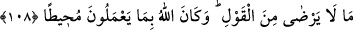
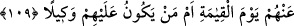

onunla ortaktır. “Çünkü Allah dâimâ hâinlik yapıp” hıyânette aşırı ve ısrarlı olanları
“günah işleyenleri” günaha dalanları “sevmez.” Allah’ın sevmemesi, buğz ve öfkeden
kinâyedir. Tu’me’den bir ihanet ve bir günah sâdır olmasına rağmen onun kötü karakteri
bu iki fiili artırmaya meyilli olduğu için onun bu fiili tekrar tekrar yaptığına delâlet eden
mübâlağa lafzı kullanılmıştır.
Rivayet edildiğine göre Tu’me Mekke’ye kaçtı ve irtidâd etti. Orada hırsızlık yapmak
için bir evin duvarını delerken duvar üzerine yıkıldı ve öldü. “Kötülük eden birine
rastlarsan bil ki onun başka günahları da vardır.” denilmiştir.
Rivâyet edildiğine göre Hz. Ömer (r.a) bir hırsızın elinin kesilmesini emretmişti.
Hırsızın annesi ağlayarak geldi ve “Bu onun ilk hırsızlığı, onu affet” dedi. Bunun
üzerine Hz. Ömer (r.a.): “Yalan söyledin. Eğer öyle olsaydı Allah ilk defa hata işleyen
kulunu sorumlu tutmazdı.” dedi.
108- İnsanlardan gizlenirler de Allah’tan gizlenmezler. Halbuki geceleyin O’nun
razı olmadığı sözü düzüp kurarken O, onlarla berâber idi. Allah onların yaptıklarını
kuşatıcıdır (O’nun ilminden hiçbir şeyi gizleyemezler).
Utandıkları ve zararlarından korktukları için “(günah işlerken) insanlardan
gizlenirler de” “Allah’tan gizlenmiyorlar.” Yâni kendisinden haya edilmeye ve
azabından korkulmaya daha müstehak olduğu halde Allah sübhanehûdan haya etmez ve
korkmazlar. “O onlarla berâberdir.” Onları ve hallerini çok iyi bilendir. Allah’ın
çirkin gördüğü ve muaheze edeceği, cezâlandıracağı şeyi terketmek dışında,
“yaptıklarını” gizleyecekleri hiç bir yol yoktur. “Halbuki geceleyin O’nun” Allah’ın
“râzı olmadığı” masum, suçsuz insana iftira, yalan yere yemin ve şâhitlik gibi “sözü
düzüp kurarken” planlar ve uydururken Allah onlarla berâberdir.
Tu’me kendi kendine şöyle demişti: “Ben, zırhı çalanın yahûdî olduğunu söyleyip ona
iftirada bulunur, onu benim çalmadığıma dair yemin ederim, yeminim de kabul görür.
Çünkü ben onların dini üzereyim. Yahudinin yemini ise kabul edilmez.” Ensardan olan
Tu’me’nin kavmi de “Bizden birinin üzerinden hırsızlığın lekesini ve cezâsını defetmek
için yalan şâhitlikte bulunuruz.” dediler. “Allah onların yaptıkları” gizli ve açık “her
şeyi kuşatmıştır.” O’ndan hiç bir şey gizli kalmaz.